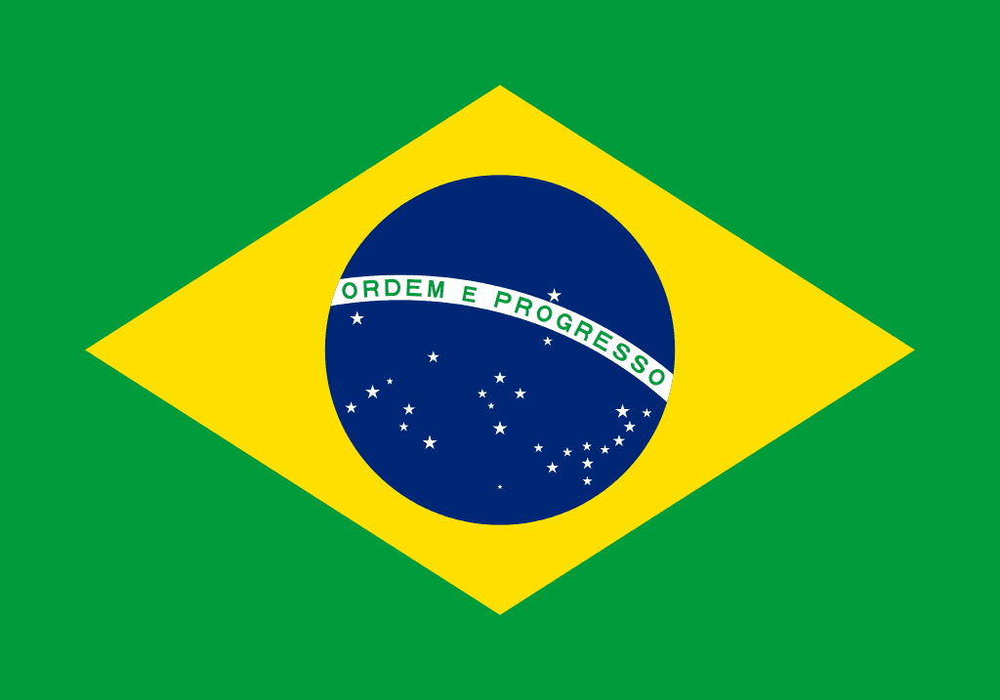

Brazil
Brazil (Portuguese: Brasil; Portuguese pronunciation: [bɾaˈziw]),[nt 1] officially the Federative Republic of Brazil (Portuguese: República Federativa do Brasil, About this soundlisten (help·info)),[9] is the largest country in both South America and Latin America. At 8.5 million square kilometers (3.2 million square miles)[10] and with over 208 million people, Brazil is the world's fifth-largest country by area and the fifth most populous. Its capital is Brasília, and its most populated city is São Paulo. The federation is composed of the union of the 26 states, the Federal District, and the 5,570 municipalities. It is the largest country to have Portuguese as an official language and the only one in the Americas;[11][12] it is also one of the most multicultural and ethnically diverse nations, due to over a century of mass immigration from around the world.[13]
Facts about the flag
All flags have an origin and a story to tell, and the Brazilian flag is no different. Culture Trip delves into the history of the flag that represents Brazil, and presents you with some intriguing facts that you may not have known regarding how it came to be and what it all means.
Its appearance
The Brazilian flag is bright green with a yellow diamond in the center filled with a blue globe. Within the blue globe are some stars – 27 to be exact – and a white banner with the country’s slogan: Ordem e Progresso, which means Order and Progress.
The colors are symbolic

The colors of the flag have meanings. The yellow represents the wealth of the country, in particular the Brazilian soil and the country’s gold reserve. The green stands for the extensive nature, fauna, and flora that Brazil is home to, especially the Amazon rainforest and the Pantanal. During the Brazilian Empire, Brazil had a different flag and the colors had different meanings. The blue and white of the past flag represented the Virgin Mary, highlighting the country’s deep roots in the Catholic religion.
The stars have meanings
The stars are a symbolic part of the flag. They represent the constellations in the southern hemisphere and show how they were seen from Rio de Janeiro during the early hours of the morning on November 15, 1889, the day the country shifted from an empire to a republic.
Bounded by the Atlantic Ocean on the east, Brazil has a coastline of 7,491 kilometers (4,655 mi).[14] It borders all other countries in South America except Ecuador and Chile and covers 47.3% of the continent's land area.[15] Its Amazon River basin includes a vast tropical forest, home to diverse wildlife, a variety of ecological systems, and extensive natural resources spanning numerous protected habitats.[14] This unique environmental heritage makes Brazil one of 17 megadiverse countries, and is the subject of significant global interest and debate regarding deforestation and environmental protection.
Brazil was inhabited by numerous tribal nations prior to the landing in 1500 of explorer Pedro Álvares Cabral, who claimed the area for the Portuguese Empire. Brazil remained a Portuguese colony until 1808, when the capital of the empire was transferred from Lisbon to Rio de Janeiro. In 1815, the colony was elevated to the rank of kingdom upon the formation of the United Kingdom of Portugal, Brazil and the Algarves. Independence was achieved in 1822 with the creation of the Empire of Brazil, a unitary state governed under a constitutional monarchy and a parliamentary system. The ratification of the first constitution in 1824 led to the formation of a bicameral legislature, now called the National Congress. The country became a presidential republic in 1889 following a military coup d'état. An authoritarian military junta came to power in 1964 and ruled until 1985, after which civilian governance resumed. Brazil's current constitution, formulated in 1988, defines it as a democratic federal republic.[16] Due to its rich culture and history, the country ranks thirteenth in the world by number of UNESCO World Heritage Sites.[17]